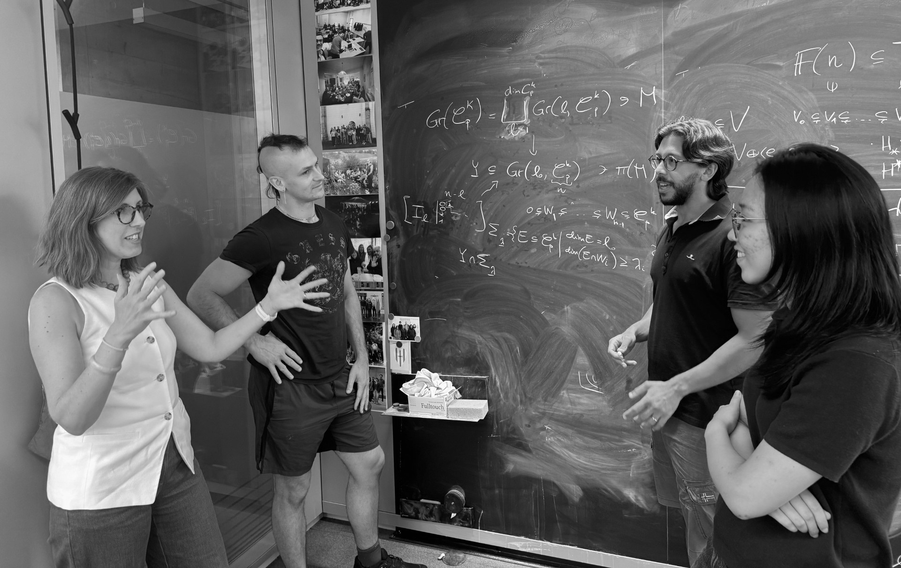

Algebraic Systems Biology
Science draws on mathematics and provides a playground for mathematicians. We develop mathematics for living systems, combining theory, computation, models, and data. From molecules to tissues, living systems are rich in structure. We use the mathematics of shape, dynamics, and high-dimensional data to find it.
Our work spans a set of connected research themes. The diagram below shows how they relate. Research explains each one; People shows who works on what.
Get Involved
The group welcomes collaboration across mathematics, biology, and medicine
Collaborate
If you are working on a biological or clinical problem that may be amenable to mathematical analysis - particularly where standard statistical approaches have reached their limits - we would like to hear from you.
Join the group
We are always looking for mathematicians, computational scientists, and quantitative biologists who want to work at the boundary between rigorous mathematics and real biological problems. PhD and postdoctoral positions are advertised here when available.
Get in touch
For enquiries about collaboration, visiting, positions, or the group's work,
contact us at:
harringtonoffice@mpi-cbg.de